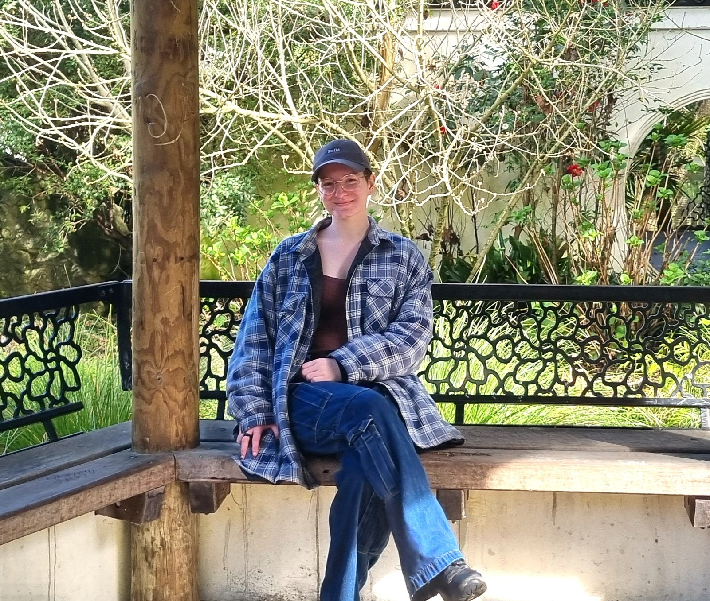

About Me
Hi, I'm Danielle.

I'm a game and interactive media producer based in Christchurch, New Zealand.
I enjoy the organisational side of creative projects: bringing people together, keeping projects moving, solving production problems and helping ambitious ideas become something that can actually be delivered.
During my honours year in the Bachelor of Digital Screen at the University of Canterbury, I produced two multidisciplinary interactive projects, Patchwork: Ōtautahi and Wiremu's Tour. Both developed beyond university assessment into public-facing experiences with external organisations.
My Approach
Good production isn't just about schedules.
I see producing as the connection between the creative, technical and practical sides of a project.
My role is to understand what the team is trying to make, what people need to do their best work, and what needs to happen for the project to actually reach its audience.
Working with multidisciplinary teams has taught me that production needs to adapt to the people and project rather than forcing every team into the same system.
Selected Experience
What I'm Interested In
Get In Touch
Let's make something.
I'm interested in opportunities across games and interactive media production.